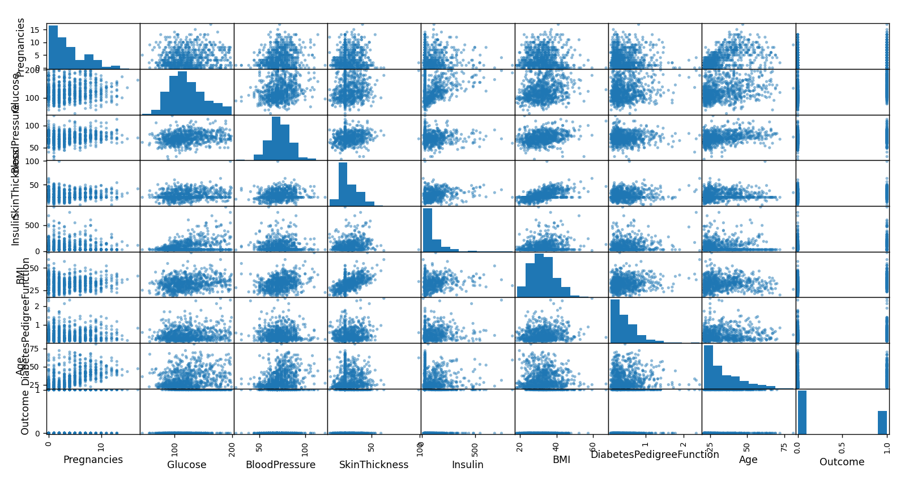
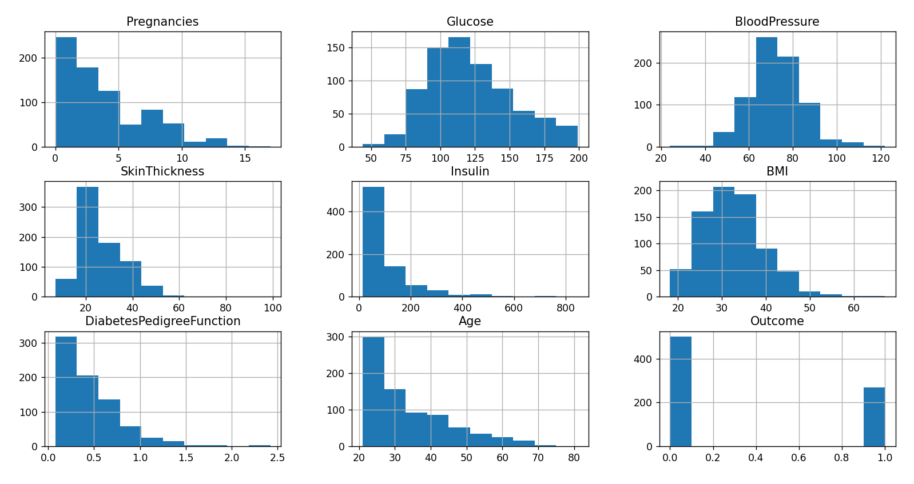
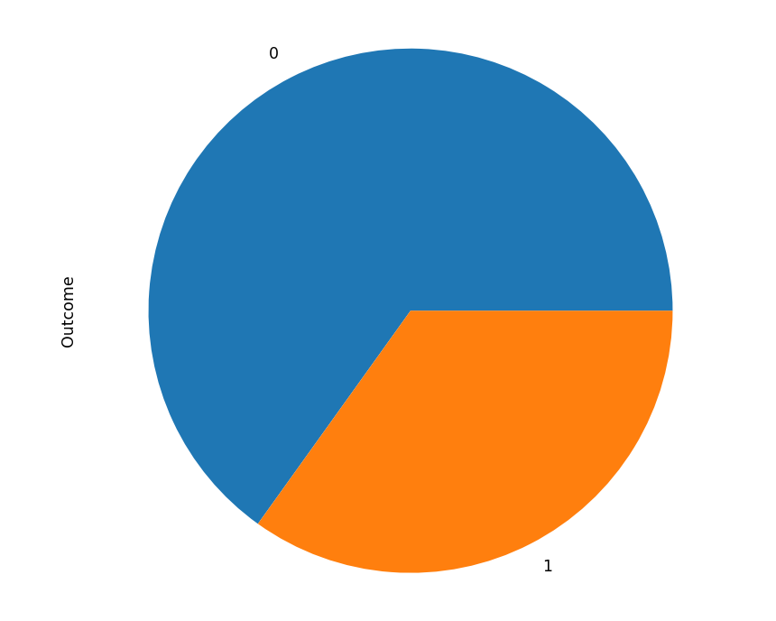
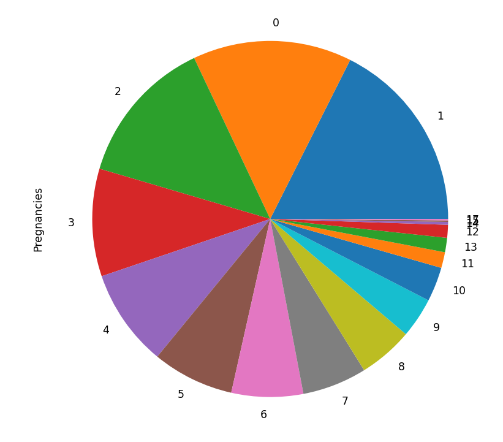
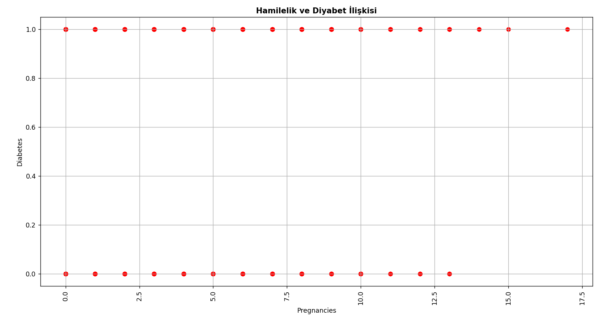
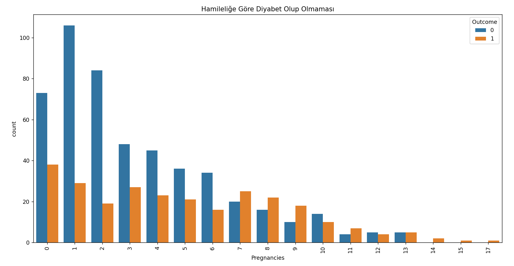
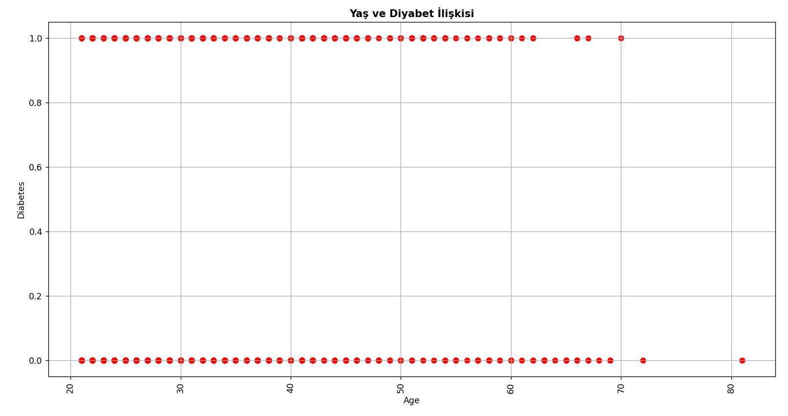
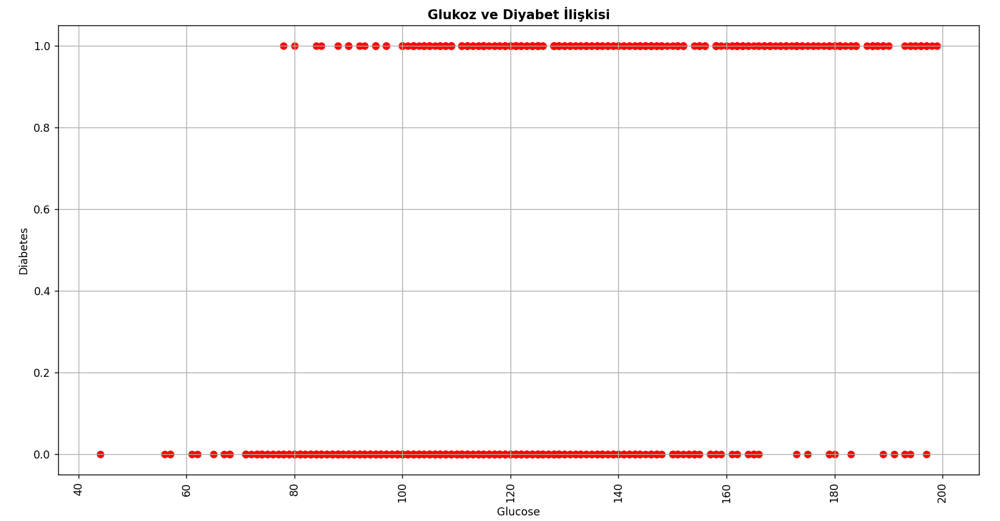
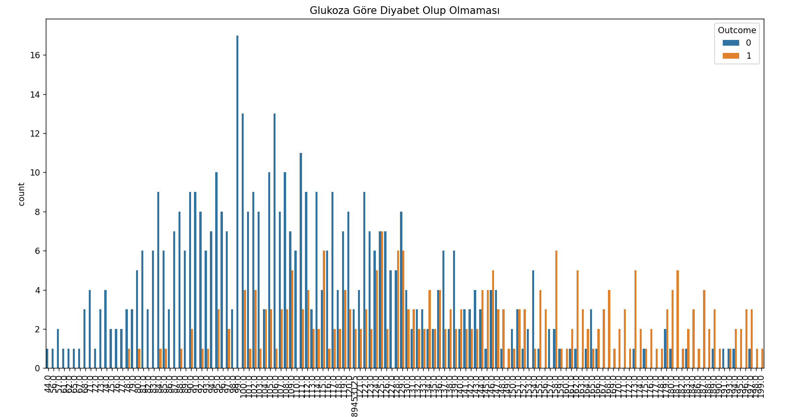

Diabetes Machine Learning Analysis
Dataset Learning Visualization
Dağılım grafiği matrisi, aynı uzunluktaki n adet sayısal diziyle, ilişkili bir matristir. Böyle bir matrisin (i,j) hücresi Xi değişkenine karşı Xj değişkeninin dağılım grafiğini gösterir. Burada, veri çerçevesinin sütunları için dağılım matrisini çizmek için Plotly Express fonksiyonu px.scatter_matrix yöntemini kullanarak oluştururuz. Varsayılan olarak, tüm sütunlar dikkate alınır. Buradan aşağıda yer alan grafiği hamilelik ve glukozun ilişkisi gibi durumlar olarak grafiğin üzerinden inceleyebiliriz.

Isı haritası, renk kodlu bir matris olarak dikdörtgen verilerin bir çizimidir. Parametre olarak 2 boyutlu bir veri kümesi alır. Bu veri kümesi bir ndarray'e zorlanabilir. Bu, verileri görselleştirmek için harika bir yoldur, çünkü zaman dahil değişkenler arasındaki ilişkiyi gösterebilir. Örneğin, burada hamileliğin insüline oranıyla yoğunluğu dikkat çekicidir.
Histogram, gruplandırılmış bir veri dağılımının sütun grafiğiyle gösterimidir. Diğer bir ifadeyle, tekrarlı sayılardan oluşan verilerin, uygulanan işlemlerden sonra önce tabloya, tablodan yararlanarak grafiğe aktarılması, yani veri gruplarının grafiğinin dikdörtgen sütunlar halinde gösterilmesidir. Burada da tüm özniteliklerin sonucu ve sayısına bağlı olarak görüntülenen histogram grafiklerini çizer.

Pasta grafiği, bir veri serisi öğelerin boyutunu tüm öğelerin toplamına orantılı olarak gösterir. Bir pasta grafikteki veri noktaları tüm pastanın yüzdesi olarak gösterilir. Bu veri setinde ise bulunan tüm verilerin nümerik veri olmasından dolayı diğer özniteliklerde diyabet sonucu dışında o kadar güzel sonuçlar alınamıştır.
 
Daha önce de elde ettiğimiz histogram grafikleri arasında yer alan diyabet hastalığının sonuçlarının bulunduğu 'Outcome' grafiği burada sns.countplot fonksiyonu yardımıyla tek olarak incelenebilmiştir. Buradan diyabet hastası olanların diyabet hastası olmayanların yarısı kadar olduğu bilgisini edinebiliriz.
Aşağıda hamilelik ve diyabet hastalığı arasındaki ilişkiyi gösteren grafikler mevcuttur. Solda bulunan grafikte diyabet hastası olanlar ile diyabet hastası olmayanlar arasında hamilelik bazlı ilişkisi verilmektedir. Solda bulunan bu grafikte diyabet hastası olanların diyabet hastası olmayanlardan farkı olarak hamilelik sayısının özellikle 12.5-13 diye tahmin edilen kısmından fazla hamilelik yaşayanlarda daha çok diyabet hastalğının olduğunun gözlemlenebilmesidir. Sağda bulunan grafikte ise her hamilelik sayısı için diyabet hastası ve diyabet hastası olmayanların sayısına dikkat çekilmektedir. Burada özellikle 14 defadan yukarı hamile kalanların direkt olarak diyabet hastası olduğunu gözlemleyebilmekteyiz.
 
Yan tarafta hamilelik ve yaş arasındaki ilişkiyi gösteren bir grafik yer almaktadır. Bu grafikle Pima Kızılderililerin özellikle kaç yaşlarında doğum yağtığı sonucuna ulaşmak istenmiştir.
Aşağıda yaş ve diyabet hastalığı arasındaki ilişkiyi gösteren grafikler mevcuttur. Solda bulunan grafikte diyabet hastası olanlar ile diyabet hastası olmayanlar arasında yaş bazlı ilişkisi verilmektedir. Solda bulunan bu grafikte hatta yaşın artması halinde bile özellikle 70 yaşından daha fazla yaşamayı başarmış olan insanlarda diaybet hastalığı gözlemlenmemiştir. Sağda bulunan grafikte ise her yaş için diyabet hastası ve diyabet hastası olmayanların sayısına dikkat çekilmektedir.


Aşağıda glukoz ve diyabet hastalığı arasındaki ilişkiyi gösteren grafikler mevcuttur. Solda bulunan grafikte diyabet hastası olanlar ile diyabet hastası olmayanlar arasında glukoz bazlı ilişkisi verilmektedir. Solda bulunan bu grafikte tek dikkat çeken glukoz oranının yaklaşık olarak 70 'den düşük olduğu insanlarda hiç bir şekilde diyabet hastalığının görülmediği gözlemlenmektedir. Sağda bulunan grafikte ise her bir glukoz oranı için diyabet hastası ve diyabet hastası olmayanların sayısına dikkat çekilmektedir. Burada gene özellikle glukoz oranının düşük olduğu insanlarda diyabet hastalığı hiç görülmüyorken, glukoz oranının yüksek olduğu insanlarda ise diyabet hastalığının dikkat çekici bir şekilde görüldüğünü gözlemleyebilmekteyiz.
 